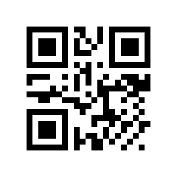
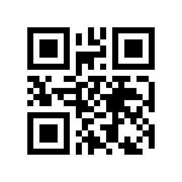
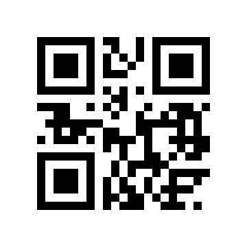
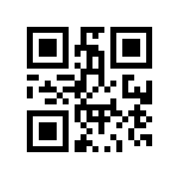

These invented IDs are for testing QR decoding. They are not real attendee tickets. After scanning, the exact ID should appear and be marked Not in this file unless your imported test dataset includes it.



